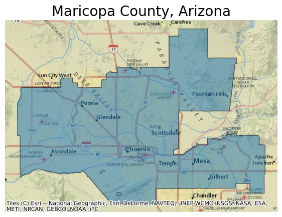
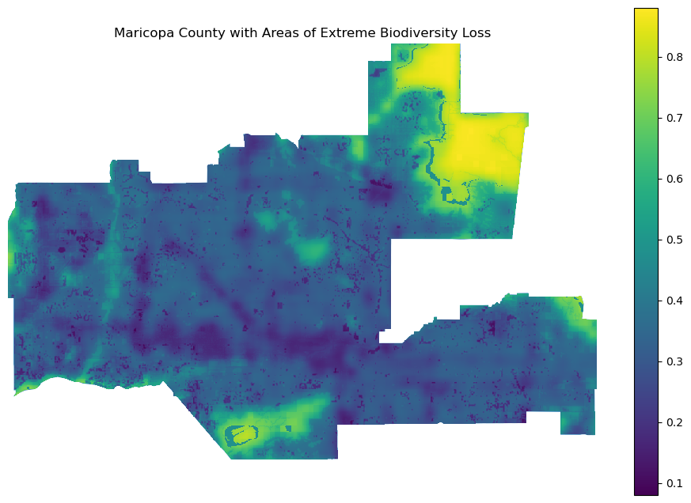

Biodiversity Intactness Index Change in Phoenix from 2017 to 2020
Using the Microsoft Planetary Computer, 2017 and 2020 rasters of Phoenix subdivision are employed to study biodiversity loss in Maricopa County. In 2021, Maricopa County was the US county that added the most developed land since 2001. Several species of animals have already been greatly impacted, including the Sonoran Pronghorn, Desert Tortoise, Cactus Ferruginous Pygmy-Owl, Sonora Tiger Salamander, and Border Cats such as Ocelots, Cougars, etc.. Along with land development, some other factors contributing to biodiversity loss include mining, population increase, urbanization, recreation, high per capita water consumption, water diversion, and animal agriculture. In order to study the effects of human influence, the biodiversity intactness index (BII) is used to find changes in biodiversity from 2017 to 2020.
Github Repository: More information regarding the data, this analysis, and workflow can be found within this github repo. https://github.com/kateebeckerr/biodiversity_index_phoenix.git
Import Relevant Libraries, Functions, and the Microsoft Planetary Computer
In order to perform this analysis, several libraries and functions must be imported to work with geospatial data, particularly for accessing, processing, and visualizing raster and vector data. The Microsoft Planetary Computer must also be imported in order to access the STAC (Spatio Temporal Asset Catalog) and obtain the io-biodiversity collection.
Code
import numpy as npimport geopandas as gpdimport rioxarray as rioxrimport matplotlib.pyplot as pltimport contextily as ctximport rasteriofrom rasterio.plot import show as rioshowfrom shapely.geometry import boximport xarray as xrimport matplotlib.patches as patchesfrom shapely.geometry import Polygonfrom scipy.ndimage import label# used to access STAC catalogsfrom pystac_client import Client# used to sign items from the MPC STAC catalogimport planetary_computer# ----- other libraries for nice ouputsfrom IPython.display import Image
Data Access
BII data: This dataset is part of the MPC STAC catalog. Within the catalog, access the ‘io-biodiversity’ collection and as well as the 2017 and 2020 rasters covering Phoenix subdivision.
Phoenix subdivision: Within the Census County Subdivision shapefiles access the Phoenix subdivision polygon in the Arizona: https://www.census.gov/cgi-bin/geo/shapefiles/index.php?year=2022&layergroup=County+Subdivisions
Arizona Shapefile Read in and a View of Phoenix County
Code
arizona = gpd.read_file('data/tl_2022_04_cousub/tl_2022_04_cousub.shp') #read in shapefile using geopandasarizona.head() #look at the head of the dataframephoenix = arizona[arizona['NAME'] =="Phoenix"] #select for phoenix county in arizona # create axis with plotax = (phoenix.to_crs(epsg=3857) #transfer crs to 3857 .plot(figsize=(7, 7), alpha=0.5, edgecolor="k") )# add NatGeo basemap from contextilyctx.add_basemap(ax, source=ctx.providers.Esri.NatGeoWorldMap)# update axesax.set_title("Maricopa County, Arizona", fontdict={"fontsize": "20"}) #sets a title ax.set_axis_off() #turns off grid lines

Catalog Access and Search for the Io-Biodiversity Collection
Using the Microsoft Planetary Computer, the io-biodiversity collection is accessed along with its metadata and assets in order to perform this analysis. The metadata for a STAC item includes core identifying information (such as id, geometry, bounding box, and date), and additional properties (for example, place of collection). In comparison, assets are links to the actual data of the item (for example, links to the spectral bands of a satellite image.) These identifiers are useful when trying to perform a more detailed catalog search such as using the following coordinates to specify a bounding box and find the relevant raster:
[-112.826843, 32.974108, -111.184387, 33.863574]
Code
## Catalog search catalog = Client.open("https://planetarycomputer.microsoft.com/api/stac/v1", modifier = planetary_computer.sign_inplace)#temporal range of interesttime_range ='2017/2020'#Bounding Box Coordinates (as a GeoJSON)bbox = [-112.826843, 32.974108, -111.184387, 33.863574]#Catalog searchsearch = catalog.search( collections = ['io-biodiversity'], bbox = bbox, datetime = time_range)items = search.item_collection()items#Number of items in the search:len(items)items #tells us there were two items in the catalog that matched our search
Metadata and Raster Access and Exploration for the 2017 and 2020 STAC Items
Code
#get fourth item in the catalog searchph_2017 = items[3]# get first item in the catalog searchph_2020 = items[0]#Visualization Check#print item id and properties for 2017 and 2020 #ph_2017#ph_2020
2017 and 2020 Raster Covering Phoenix Subdivision Preview
The raster data in our current items is within the “data” asset and can be accessed via its URL. We will open the raster directly using rioxr.open_rasterio()
In order to study biodiversity loss, the biodiversity intactness index (BII)is employed which estimates how the average abundance of native terrestrial species in a region (2020) compares with their abundances before pronounced human impacts (2017). Area that has been lost with a BII of at least 0.75 or greater signifies an extreme biodiversity loss and is therefore used as a threshold in this analysis.
Code
#set thresholdbi_threshold =0.75#found the areas in which the BII was greater than 0.75above_thresh_2017 = ph_2017 >= bi_threshold above_thresh_2020 = ph_2020 >= bi_threshold #casted it as int. data array to accecss binary values above_thresh_2017 = above_thresh_2017.astype(int) above_thresh_2020 = above_thresh_2020.astype(int) #calculating the the total number of pixels in the phoenix subdivision for 2017 and 2020 total_2017 = np.sum(ph_2017) total_2020 = np.sum(ph_2020) #calculating the percentage of pixels with a BII of at least 0.75percent_2017 = (np.sum(above_thresh_2017 / total_2017)) *100percent_2020 = (np.sum(above_thresh_2020 / total_2020)) *100#check: look at new variable #percent_2017#percent_2020#identify the lost pixels lost_pixels = above_thresh_2017 - above_thresh_2020 print(np.sum(lost_pixels))#print percentage values for 2017 and 2020 print(f"Percentage of area with BII >= 0.75 in 2017: {percent_2017:.2f}%")print(f"Percentage of area with BII >= 0.75 in 2020 {percent_2020:.2f}%")
Data Wrangling for Spatial Datasets
In order to perform geospatial operations, it’s crucial to ensure that two spatial datasets are aligned in terms of their coordinate reference systems (CRS) and spatial extent. This alignment is necessary for accurate spatial analysis and overlays between vector and raster data.
Code
#make crs' the same phoenix = phoenix.to_crs(lost_pixels.rio.crs)#check to make sure crs' matchphoenix.crs == lost_pixels.rio.crs#clipping the bii data to phoenix geometry lost_pixels = lost_pixels.rio.clip(phoenix.geometry, phoenix.crs) #clipping the ph_2020 data to phoenix geometry ph_2020 = ph_2020.rio.clip(phoenix.geometry, phoenix.crs)#check#type(lost_pixels)#type(phoenix)#type(above_thresh_2017)
/Users/katebecker/anaconda3/envs/mpc-env/lib/python3.11/site-packages/xarray/core/duck_array_ops.py:201: RuntimeWarning: invalid value encountered in cast
return data.astype(dtype, **kwargs)
Preparing and Cleaning Raster Data
For further analysis this step is necessary to effectively process raster data. This is done to clean up unnecessary information in the dataset, especially if you’re not performing analyses based on bands. Similarily, it simplifies the structure of the data, especially if you’re working with a single-band raster. This kind of data preprocessing is common in geospatial analysis workflows to ensure data consistency and relevance to the study area.
Code
# remove length 1 dimension (band)ph_2020 = ph_2020.squeeze()# remove coordinates associated to bandph_2020 = ph_2020.drop('band')#clipping the ph_2020 data to phoenix geometry ph_2020 = ph_2020.rio.clip(phoenix.geometry, phoenix.crs)#check: plot the area showing BII > 0.75 lost_pixels.plot()
Visualization showing the area with BII >= 0.75 in 2017 that was lost by 2020
In order to effectively complete this analysis and create a meaningful and insightful map, all of the relevant data must be compiled together.
Code
fig, ax = plt.subplots(figsize=(12, 8))ax.axis('off')phoenix.plot(ax=ax) #plot phoenix shapefile ph_2020.plot(ax=ax) #plot 2020 rasterlost_pixels.where(lost_pixels ==1).plot(ax=ax, add_colorbar=False) #plotting the area with BII >= 0.75 in 2017 that was lost by 2020plt.title('Maricopa County with Areas of Extreme Biodiversity Loss') #added a title plt.show() #printed map #get rid of bar on left

Findings
Now that the data processing is over we can plot the phoenix shapefile, the 2020 raster, and the raster containing the biodiversity loss from 2017 to 2020. It appears that there was a significant loss in biodiversity within Maricopa County as a result of land development. The areas with a neon yellow hue are those with BII>=0.75 in 2017 that were lost by 2020. Over a three year period, this loss is catastrophic for such a small temporal scale. This analysis can be further explored to measure biodiversity levels as climate change and human encroachment continues.